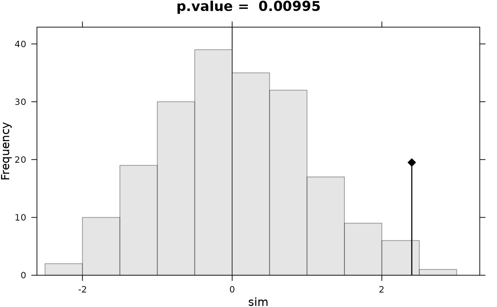
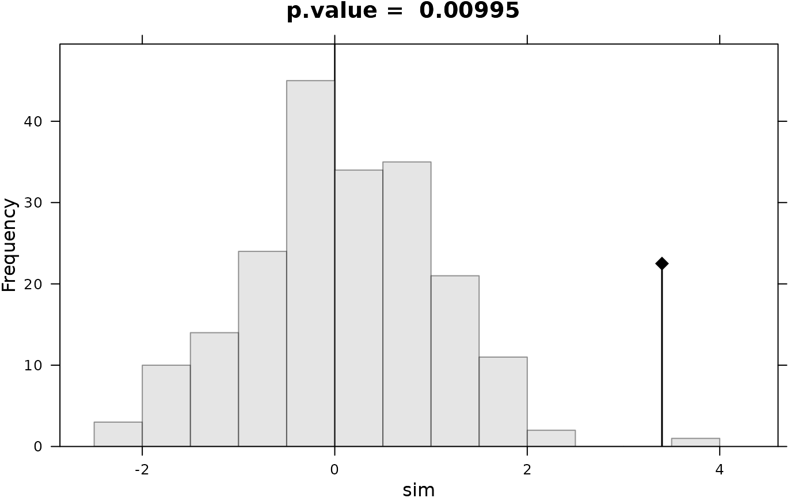
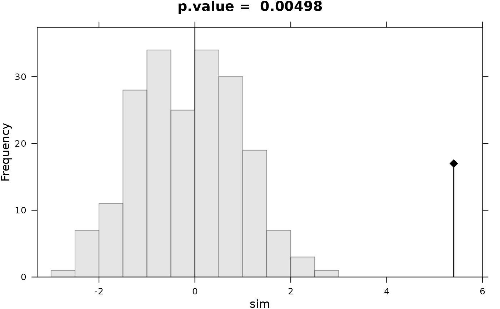
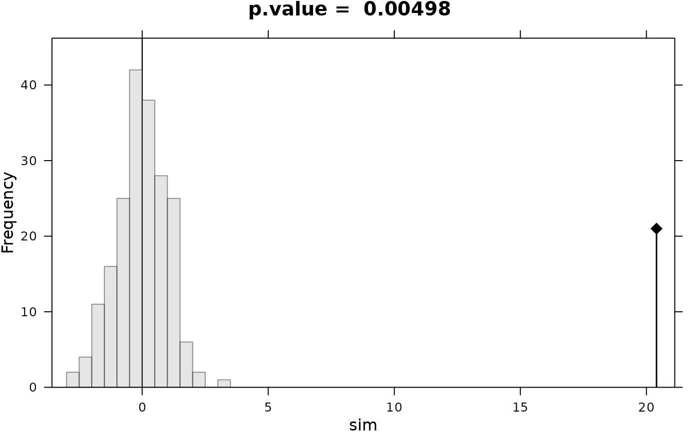

Class of the Permutation Tests (in C).
randtest.Rdrandtest is a generic function. It proposes methods for the following objects between, discrimin, coinertia ...
Usage
randtest(xtest, ...)
as.randtest(sim, obs, alter = c("greater", "less", "two-sided"),
output = c("light", "full"), call = match.call(), subclass = NULL)
# S3 method for randtest
plot(x, nclass = 10, coeff = 1, ...)
# S3 method for randtest
print(x, ...)Arguments
- xtest
an object used to select a method
- x
an object of class
randtest- ...
further arguments passed to or from other methods; in
plot.randtesttohist- output
a character string specifying if all simulations should be stored (
"full"). This was the default untilade41.7-5. Now, by default ("light"), only the distribution of simulated values is stored in elementplotas produced by thehistfunction.- nclass
a number of intervals for the histogram. Ignored if object output is
"light"- coeff
to fit the magnitude of the graph. Ignored if object output is
"light"- sim
a numeric vector of simulated values
- obs
a numeric vector of an observed value
- alter
a character string specifying the alternative hypothesis, must be one of "greater" (default), "less" or "two-sided"
- call
a call order
- subclass
a character vector indicating the subclasses associated to the returned object
Value
as.randtest returns a list of class randtest.
plot.randtest draws the simulated values histograms and the position of the observed value.
Details
If the alternative hypothesis is "greater", a p-value is estimated as: (number of random values equal to or greater than the observed one + 1)/(number of permutations + 1). The null hypothesis is rejected if the p-value is less than the significance level. If the alternative hypothesis is "less", a p-value is estimated as: (number of random values equal to or less than the observed one + 1)/(number of permutations + 1). Again, the null hypothesis is rejected if the p-value is less than the significance level. Lastly, if the alternative hypothesis is "two-sided", the estimation of the p-value is equivalent to the one used for "greater" except that random and observed values are firstly centered (using the average of random values) and secondly transformed to their absolute values. Note that this is only suitable for symmetric random distribution.
Examples
par(mfrow = c(2,2))
for (x0 in c(2.4,3.4,5.4,20.4)) {
l0 <- as.randtest(sim = rnorm(200), obs = x0)
print(l0)
plot(l0,main=paste("p.value = ", round(l0$pvalue, dig = 5)))
}
#> Monte-Carlo test
#> Call: as.randtest(sim = rnorm(200), obs = x0)
#>
#> Observation: 2.4
#>
#> Based on 200 replicates
#> Simulated p-value: 0.01492537
#> Alternative hypothesis: greater
#>
#> Std.Obs Expectation Variance
#> 2.4549492 -0.1461375 1.0756691

#> Monte-Carlo test
#> Call: as.randtest(sim = rnorm(200), obs = x0)
#>
#> Observation: 3.4
#>
#> Based on 200 replicates
#> Simulated p-value: 0.004975124
#> Alternative hypothesis: greater
#>
#> Std.Obs Expectation Variance
#> 3.488668937 -0.009737063 0.955261476

#> Monte-Carlo test
#> Call: as.randtest(sim = rnorm(200), obs = x0)
#>
#> Observation: 5.4
#>
#> Based on 200 replicates
#> Simulated p-value: 0.004975124
#> Alternative hypothesis: greater
#>
#> Std.Obs Expectation Variance
#> 5.4376304 -0.0216752 0.9941402

#> Monte-Carlo test
#> Call: as.randtest(sim = rnorm(200), obs = x0)
#>
#> Observation: 20.4
#>
#> Based on 200 replicates
#> Simulated p-value: 0.004975124
#> Alternative hypothesis: greater
#>
#> Std.Obs Expectation Variance
#> 20.81329387 0.03534289 0.95735403

par(mfrow = c(1,1))